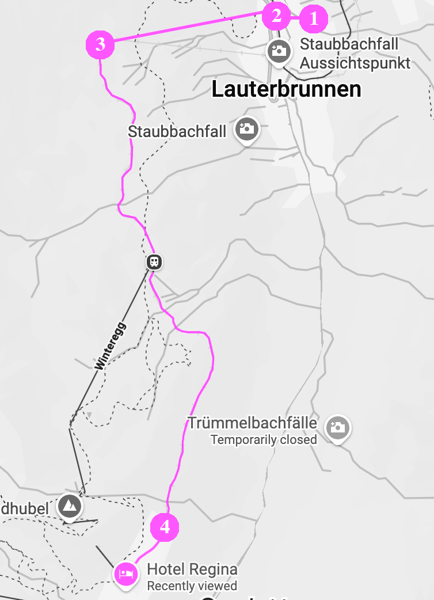
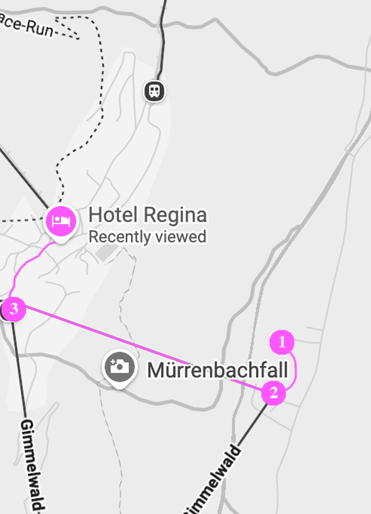

Eftersom Mürren är en bilfri by som ligger på en klippavsats, krävs ett litet äventyr för att nå Hotel Regina.
Du kan inte köra direkt till hotellet, men resan är en av de vackraste i de schweiziska alperna.
Du har två huvudalternativ för parkering och bergstillgång:
Alternativ A: Via Lauterbrunnen
1. Parkera: Använd det stora parkeringshuset i Lauterbrunnen (Parkhaus Lauterbrunnen) som ligger vid byns infart. Det är direktanslutet till tågstationen.
2. Kabinbanan: Ta LSMS-kabinbanan från Lauterbrunnen upp till Grütschalp.
3. Tåget: Från Grütschalp stiger du på den lilla bergsjärnvägen (BLM) som slingrar sig längs klippkanten in till Mürren station.
4. 10 minuters promenad från stationen till hotellet.

